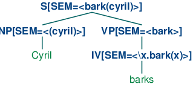

10. Analyzing the Meaning of Sentences
We have seen how useful it is to harness the power of a computer to process text on a large scale. However, now that we have the machinery of parsers and feature based grammars, can we do anything similarly useful by analyzing the meaning of sentences? The goal of this chapter is to answer the following questions:
- How can we represent natural language meaning so that a computer can process these representations?
- How can we associate meaning representations with an unlimited set of sentences?
- How can we use programs that connect the meaning representations of sentences to stores of knowledge?
Along the way we will learn some formal techniques in the field of logical semantics, and see how these can be used for interrogating databases that store facts about the world.
1 Natural Language Understanding
1.1 Querying a Database
Suppose we have a program that lets us type in a natural language question and gives us back the right answer:
| (1) |
|
How hard is it to write such a program? And can we just use the same techniques that we've encountered so far in this book, or does it involve something new? In this section, we will show that solving the task in a restricted domain is pretty straightforward. But we will also see that to address the problem in a more general way, we have to open up a whole new box of ideas and techniques, involving the representation of meaning.
So let's start off by assuming that we have data about cities and countries in a structured form. To be concrete, we will use a database table whose first few rows are shown in 1.1.
Note
The data illustrated in 1.1 is drawn from the Chat-80 system (Warren & Pereira, 1982). Population figures are given in thousands, but note that the data used in these examples dates back at least to the 1980s, and was already somewhat out of date at the point when (Warren & Pereira, 1982) was published.
| City | Country | Population |
|---|---|---|
| athens | greece | 1368 |
| bangkok | thailand | 1178 |
| barcelona | spain | 1280 |
| berlin | east_germany | 3481 |
| birmingham | united_kingdom | 1112 |
The obvious way to retrieve answers from this tabular data involves writing queries in a database query language such as SQL.
Note
SQL (Structured Query Language) is a language designed for retrieving and managing data in relational databases. If you want to find out more about SQL, http://www.w3schools.com/sql/ is a convenient online reference.
For example, executing the query (2) will pull out the value 'greece':
| (2) | SELECT Country FROM city_table WHERE City = 'athens' |
This specifies a result set consisting of all values for the column Country in data rows where the value of the City column is 'athens'.
How can we get the same effect using English as our input to the query system? The feature-based grammar formalism described in 9. makes it easy to translate from English to SQL. The grammar sql0.fcfg illustrates how to assemble a meaning representation for a sentence in tandem with parsing the sentence. Each phrase structure rule is supplemented with a recipe for constructing a value for the feature sem. You can see that these recipes are extremely simple; in each case, we use the string concatenation operation + to splice the values for the child constituents to make a value for the parent constituent.
|
This allows us to parse a query into SQL.
|
Note
Your Turn: Run the parser with maximum tracing on, i.e., cp = load_parser('grammars/book_grammars/sql0.fcfg', trace=3), and examine how the values of sem are built up as complete edges are added to the chart.
Finally, we execute the query over the database city.db and retrieve some results.
Since each row r is a one-element tuple, we print out the member of
the tuple rather than tuple itself ![[1]](callouts/callout1.gif) .
.
To summarize, we have defined a task where the computer returns useful data in response to a natural language query, and we implemented this by translating a small subset of English into SQL. We can say that our NLTK code already "understands" SQL, given that Python is able to execute SQL queries against a database, and by extension it also "understands" queries such as What cities are located in China. This parallels being able to translate from Dutch into English as an example of natural language understanding. Suppose that you are a native speaker of English, and have started to learn Dutch. Your teacher asks if you understand what (3) means:
| (3) | Margrietje houdt van Brunoke. |
If you know the meanings of the individual words in (3), and know how these meanings are combined to make up the meaning of the whole sentence, you might say that (3) means the same as Margrietje loves Brunoke
An observer — let's call her Olga — might well take this as evidence that you do grasp the meaning of (3). But this would depend on Olga herself understanding English. If she doesn't, then your translation from Dutch to English is not going to convince her of your ability to understand Dutch. We will return to this issue shortly.
The grammar sql0.fcfg, together with the NLTK Earley parser, is instrumental in carrying out the translation from English to SQL. How adequate is this grammar? You saw that the SQL translation for the whole sentence was built up from the translations of the components. However, there does not seem to be a lot of justification for these component meaning representations. For example, if we look at the analysis of the noun phrase Which cities, the determiner and noun correspond respectively to the SQL fragments SELECT and City FROM city_table. But neither of these have a well-defined meaning in isolation from the other.
There is another criticism we can level at the grammar: we have "hard-wired" an embarrassing amount of detail about the database into it. We need to know the name of the relevant table (e.g., city_table) and the names of the fields. But our database could have contained exactly the same rows of data yet used a different table name and different field names, in which case the SQL queries would not be executable. Equally, we could have stored our data in a different format, such as XML, in which case retrieving the same results would require us to translate our English queries into an XML query language rather than SQL. These considerations suggest that we should be translating English into something that is more abstract and generic than SQL.
In order to sharpen the point, let's consider another English query and its translation:
| (4) |
|
Note
Your Turn: Extend the grammar sql0.fcfg so that it will translate (4a) into (4b), and check the values returned by the query.
You will probably find it easiest to first extend the grammar to handle queries like What cities have populations above 1,000,000 before tackling conjunction. After you have had a go at this task, you can compare your solution to grammars/book_grammars/sql1.fcfg in the NLTK data distribution.
Observe that the and conjunction in (4a) is translated into an AND in the SQL counterpart, (4b). The latter tells us to select results from rows where two conditions are true together: the value of the Country column is 'china' and the value of the Population column is greater than 1000. This interpretation for and involves a new idea: it talks about what is true in some particular situation, and tells us that Cond1 AND Cond2 is true in situation s just in case that condition Cond1 is true in s and condition Cond2 is true in s. Although this doesn't account for the full range of meanings of and in English, it has the nice property that it is independent of any query language. In fact, we have given it the standard interpretation from classical logic. In the following sections, we will explore an approach in which sentences of natural language are translated into logic instead of an executable query language such as SQL. One advantage of logical formalisms is that they are more abstract and therefore more generic. If we wanted to, once we had our translation into logic, we could then translate it into various other special-purpose languages. In fact, most serious attempts to query databases via natural language have used this methodology.
1.2 Natural Language, Semantics and Logic
We started out trying to capture the meaning of (1a) by translating it into a query in another language, SQL, which the computer could interpret and execute. But this still begged the question whether the translation was correct. Stepping back from database query, we noted that the meaning of and seems to depend on being able to specify when statements are true or not in a particular situation. Instead of translating a sentence S from one language to another, we try to say what S is about by relating it to a situation in the world. Let's pursue this further. Imagine there is a situation s where there are two entities, Margrietje and her favourite doll, Brunoke. In addition, there is a relation holding between the two entities, which we will call the love relation. If you understand the meaning of (3), then you know that it is true in situation s. In part, you know this because you know that Margrietje refers to Margrietje, Brunoke refers to Brunoke, and houdt van refers to the love relation.
We have introduced two fundamental notions in semantics. The first is that declarative sentences are true or false in certain situations. The second is that definite noun phrases and proper nouns refer to things in the world. So (3) is true in a situation where Margrietje loves the doll Brunoke, here illustrated in 1.1.

Figure 1.1: Depiction of a situation in which Margrietje loves Brunoke.
Once we have adopted the notion of truth in a situation, we have a powerful tool for reasoning. In particular, we can look at sets of sentences, and ask whether they could be true together in some situation. For example, the sentences in (5) can be both true, while those in (6) and (7) cannot be. In other words, the sentences in (5) are consistent, while those in (6) and (7) are inconsistent.
| (5) |
|
| (6) |
|
| (7) |
|
We have chosen sentences about fictional countries (featured in the Marx Brothers' 1933 movie Duck Soup) to emphasize that your ability to reason about these examples does not depend on what is true or false in the actual world. If you know the meaning of the word no, and also know that the capital of a country is a city in that country, then you should be able to conclude that the two sentences in (6) are inconsistent, regardless of where Freedonia is or what the population of its capital is. That is, there's no possible situation in which both sentences could be true. Similarly, if you know that the relation expressed by to the north of is asymmetric, then you should be able to conclude that the two sentences in (7) are inconsistent.
Broadly speaking, logic-based approaches to natural language semantics focus on those aspects of natural language which guide our judgments of consistency and inconsistency. The syntax of a logical language is designed to make these features formally explicit. As a result, determining properties like consistency can often be reduced to symbolic manipulation, that is, to a task that can be carried out by a computer. In order to pursue this approach, we first want to develop a technique for representing a possible situation. We do this in terms of something that logicians call a model.
A model for a set W of sentences is a formal representation of a situation in which all the sentences in W are true. The usual way of representing models involves set theory. The domain D of discourse (all the entities we currently care about) is a set of individuals, while relations are treated as sets built up from D. Let's look at a concrete example. Our domain D will consist of three children, Stefan, Klaus and Evi, represented respectively as s, k and e. We write this as D = {s, k, e}. The expression boy denotes the set consisting of Stefan and Klaus, the expression girl denotes the set consisting of Evi, and the expression is running denotes the set consisting of Stefan and Evi. 1.2 is a graphical rendering of the model.

Figure 1.2: Diagram of a model containing a domain D and subsets of D corresponding to the predicates boy, girl and is running.
Later in this chapter we will use models to help evaluate the truth or falsity of English sentences, and in this way to illustrate some methods for representing meaning. However, before going into more detail, let's put the discussion into a broader perspective, and link back to a topic that we briefly raised in 5. Can a computer understand the meaning of a sentence? And how could we tell if it did? This is similar to asking "Can a computer think?" Alan Turing famously proposed to answer this by examining the ability of a computer to hold sensible conversations with a human (Turing, 1950). Suppose you are having a chat session with a person and a computer, but you are not told at the outset which is which. If you cannot identify which of your partners is the computer after chatting with each of them, then the computer has successfully imitated a human. If a computer succeeds in passing itself off as human in this "imitation game" (or "Turing Test" as it is popularly known), then according to Turing, we should be prepared to say that the computer can think and can be said to be intelligent. So Turing side-stepped the question of somehow examining the internal states of a computer by instead using its behavior as evidence of intelligence. By the same reasoning, we have assumed that in order to say that a computer understands English, it just needs to behave as though it did. What is important here is not so much the specifics of Turing's imitation game, but rather the proposal to judge a capacity for natural language understanding in terms of observable behavior.
2 Propositional Logic
A logical language is designed to make reasoning formally explicit. As a result, it can capture aspects of natural language which determine whether a set of sentences is consistent. As part of this approach, we need to develop logical representations of a sentence φ which formally capture the truth-conditions of φ. We'll start off with a simple example:
| (8) | [Klaus chased Evi] and [Evi ran away]. |
Let's replace the two sub-sentences in (8) by φ and ψ respectively, and put & for the logical operator corresponding to the English word and: φ & ψ. This structure is the logical form of (8).
Propositional logic allows us to represent just those parts of linguistic structure which correspond to certain sentential connectives. We have just looked at and. Other such connectives are not, or and if..., then.... In the formalization of propositional logic, the counterparts of such connectives are sometimes called boolean operators. The basic expressions of propositional logic are propositional symbols, often written as P, Q, R, etc. There are varying conventions for representing boolean operators. Since we will be focusing on ways of exploring logic within NLTK, we will stick to the following ASCII versions of the operators:
|
From the propositional symbols and the boolean operators we can build an infinite set of well formed formulas (or just formulas, for short) of propositional logic. First, every propositional letter is a formula. Then if φ is a formula, so is -φ. And if φ and ψ are formulas, then so are (φ & ψ) (φ | ψ) (φ -> ψ) (φ <-> ψ).
The 2.1 specifies the truth-conditions for formulas containing these operators. As before we use φ and ψ as variables over sentences, and abbreviate if and only if as iff.
| Boolean Operator | Truth Conditions | ||
|---|---|---|---|
| negation (it is not the case that ...) | -φ is true in s | iff | φ is false in s |
| conjunction (and) | (φ & ψ) is true in s | iff | φ is true in s and ψ is true in s |
| disjunction (or) | (φ | ψ) is true in s | iff | φ is true in s or ψ is true in s |
| implication (if ..., then ...) | (φ -> ψ) is true in s | iff | φ is false in s or ψ is true in s |
| equivalence (if and only if) | (φ <-> ψ) is true in s | iff | φ and ψ are both true in s or both false in s |
These rules are generally straightforward, though the truth conditions for implication departs in many cases from our usual intuitions about the conditional in English. A formula of the form (P -> Q) is only false when P is true and Q is false. If P is false (say P corresponds to The moon is made of green cheese) and Q is true (say Q corresponds to Two plus two equals four) then P -> Q will come out true.
NLTKs Expression object can process logical expressions into various subclasses of Expression:
|
From a computational perspective, logics give us an important tool for performing inference. Suppose you state that Freedonia is not to the north of Sylvania, and you give as your reasons that Sylvania is to the north of Freedonia. In this case, you have produced an argument. The sentence Sylvania is to the north of Freedonia is the assumption of the argument while Freedonia is not to the north of Sylvania is the conclusion. The step of moving from one or more assumptions to a conclusion is called inference. Informally, it is common to write arguments in a format where the conclusion is preceded by therefore.
| (9) | Sylvania is to the north of Freedonia.
Therefore, Freedonia is not to the north of Sylvania
|
An argument is valid if there is no possible situation in which its premises are all true and its conclusion is not true.
Now, the validity of (9) crucially depends on the meaning of the phrase to the north of, in particular, the fact that it is an asymmetric relation:
| (10) | if x is to the north of y then y is not to the north of x. |
Unfortunately, we can't express such rules in propositional logic: the smallest elements we have to play with are atomic propositions, and we cannot "look inside" these to talk about relations between individuals x and y. The best we can do in this case is capture a particular case of the asymmetry. Let's use the propositional symbol SnF to stand for Sylvania is to the north of Freedonia and FnS for Freedonia is to the north of Sylvania. To say that Freedonia is not to the north of Sylvania, we write -FnS That is, we treat not as equivalent to the phrase it is not the case that ..., and translate this as the one-place boolean operator -. So now we can write the implication in (10) as
| (11) | SnF -> -FnS |
How about giving a version of the complete argument? We will replace the first sentence of (9) by two formulas of propositional logic: SnF, and also the implication in (11), which expresses (rather poorly) our background knowledge of the meaning of to the north of. We'll write [A1, ..., An] / C to represent the argument that conclusion C follows from assumptions [A1, ..., An]. This leads to the following as a representation of argument (9):
| (12) | [SnF, SnF -> -FnS] / -FnS |
This is a valid argument: if SnF and SnF -> -FnS are both true in a situation s, then -FnS must also be true in s. By contrast, if FnS were true, this would conflict with our understanding that two objects cannot both be to the north of each other in any possible situation. Equivalently, the list [SnF, SnF -> -FnS, FnS] is inconsistent — these sentences cannot all be true together.
Arguments can be tested for "syntactic validity" by using a proof system. We will say a little bit more about this later on in 3. Logical proofs can be carried out with NLTK's inference module, for example via an interface to the third-party theorem prover Prover9. The inputs to the inference mechanism first have to be converted into logical expressions.
|
Here's another way of seeing why the conclusion follows. SnF -> -FnS is semantically equivalent to -SnF | -FnS, where "|" is the two-place operator corresponding to or. In general, φ | ψ is true in a situation s if either φ is true in s or φ is true in s. Now, suppose both SnF and -SnF | -FnS are true in situation s. If SnF is true, then -SnF cannot also be true; a fundamental assumption of classical logic is that a sentence cannot be both true and false in a situation. Consequently, -FnS must be true.
Recall that we interpret sentences of a logical language relative to a model, which is a very simplified version of the world. A model for propositional logic needs to assign the values True or False to every possible formula. We do this inductively: first, every propositional symbol is assigned a value, and then we compute the value of complex formulas by consulting the meanings of the boolean operators (i.e, 2.1) and applying them to the values of the formula's components. A Valuation is a mapping from basic expressions of the logic to their values. Here's an example:
|
We initialize a Valuation with a list of pairs, each of which consists of a semantic symbol and a semantic value. The resulting object is essentially just a dictionary that maps logical expressions (treated as strings) to appropriate values.
|
As we will see later, our models need to be somewhat more complicated in order to handle the more complex logical forms discussed in the next section; for the time being, just ignore the dom and g parameters in the following declarations.
|
Now let's initialize a model m that uses val:
|
Every model comes with an evaluate() method, which will determine the semantic value of logical expressions, such as formulas of propositional logic; of course, these values depend on the initial truth values we assigned to propositional symbols such as P, Q and R.
|
Note
Your Turn: Experiment with evaluating different formulas of propositional logic. Does the model give the values that you expected?
Up until now, we have been translating our English sentences into propositional logic. Because we are confined to representing atomic sentences with letters like P and Q, we cannot dig into their internal structure. In effect, we are saying that there is nothing of logical interest to dividing atomic sentences into subjects, objects and predicates. However, this seems wrong: if we want to formalize arguments such as (9), we have to be able to "look inside" basic sentences. As a result, we will move beyond Propositional Logic to a something more expressive, namely First-Order Logic. This is what we turn to in the next section.
3 First-Order Logic
In the remainder of this chapter, we will represent the meaning of natural language expressions by translating them into first-order logic. Not all of natural language semantics can be expressed in first-order logic. But it is a good choice for computational semantics because it is expressive enough to represent a good deal, and on the other hand, there are excellent systems available off the shelf for carrying out automated inference in first order logic.
Our next step will be to describe how formulas of first-order logic are constructed, and then how such formulas can be evaluated in a model.
3.1 Syntax
First-order logic keeps all the boolean operators of Propositional Logic. But it adds some important new mechanisms. To start with, propositions are analyzed into predicates and arguments, which takes us a step closer to the structure of natural languages. The standard construction rules for first-order logic recognize terms such as individual variables and individual constants, and predicates which take differing numbers of arguments. For example, Angus walks might be formalized as walk(angus) and Angus sees Bertie as see(angus, bertie). We will call walk a unary predicate, and see a binary predicate. The symbols used as predicates do not have intrinsic meaning, although it is hard to remember this. Returning to one of our earlier examples, there is no logical difference between (13a) and (13b).
| (13) |
|
By itself, first-order logic has nothing substantive to say about lexical semantics — the meaning of individual words — although some theories of lexical semantics can be encoded in first-order logic. Whether an atomic predication like see(angus, bertie) is true or false in a situation is not a matter of logic, but depends on the particular valuation that we have chosen for the constants see, angus and bertie. For this reason, such expressions are called non-logical constants. By contrast, logical constants (such as the boolean operators) always receive the same interpretation in every model for first-order logic.
We should mention here that one binary predicate has special status, namely equality, as in formulas such as angus = aj. Equality is regarded as a logical constant, since for individual terms t1 and t2, the formula t1 = t2 is true if and only if t1 and t2 refer to one and the same entity.
It is often helpful to inspect the syntactic structure of expressions of first-order logic, and the usual way of doing this is to assign types to expressions. Following the tradition of Montague grammar, we will use two basic types: e is the type of entities, while t is the type of formulas, i.e., expressions which have truth values. Given these two basic types, we can form complex types for function expressions. That is, given any types σ and τ, 〈σ, τ〉 is a complex type corresponding to functions from 'σ things' to 'τ things'. For example, 〈e, t〉 is the type of expressions from entities to truth values, namely unary predicates. The logical expression can be processed with type checking.
|
Why do we see <e,?> at the end of this example? Although the type-checker will try to infer as many types as possible, in this case it has not managed to fully specify the type of walk, since its result type is unknown. Although we are intending walk to receive type <e, t>, as far as the type-checker knows, in this context it could be of some other type such as <e, e> or <e, <e, t>. To help the type-checker, we need to specify a signature, implemented as a dictionary that explicitly associates types with non-logical constants:
|
A binary predicate has type 〈e, 〈e, t〉〉. Although this is the type of something which combines first with an argument of type e to make a unary predicate, we represent binary predicates as combining directly with their two arguments. For example, the predicate see in the translation of Angus sees Cyril will combine with its arguments to give the result see(angus, cyril).
In first-order logic, arguments of predicates can also be individual variables such as x, y and z. In NLTK, we adopt the convention that variables of type e are all lowercase. Individual variables are similar to personal pronouns like he, she and it, in that we need to know about the context of use in order to figure out their denotation.
One way of interpreting the pronoun in (14) is by pointing to a relevant individual in the local context.
| (14) | He disappeared. |
Another way is to supply a textual antecedent for the pronoun he, for example by uttering (15a) prior to (14). Here, we say that he is coreferential with the noun phrase Cyril. As a result, (14) is semantically equivalent to (15b).
| (15) |
|
Consider by contrast the occurrence of he in (16a). In this case, it is bound by the indefinite NP a dog, and this is a different relationship than coreference. If we replace the pronoun he by a dog, the result (16b) is not semantically equivalent to (16a).
| (16) |
|
Corresponding to (17a), we can construct an open formula (17b) with two occurrences of the variable x. (We ignore tense to simplify exposition.)
| (17) |
|
By placing an existential quantifier ∃x ('for some x') in front of (17b), we can bind these variables, as in (18a), which means (18b) or, more idiomatically, (18c).
| (18) |
|
The NLTK rendering of (18a):
| (19) | exists x.(dog(x) & disappear(x)) |
In addition to the existential quantifier, first-order logic offers us the universal quantifier ∀x ('for all x'), illustrated in (20).
| (20) |
|
The NLTK syntax for (20a):
| (21) | all x.(dog(x) -> disappear(x)) |
Although (20a) is the standard first-order logic translation of (20c), the truth conditions aren't necessarily what you expect. The formula says that if some x is a dog, then x disappears — but it doesn't say that there are any dogs. So in a situation where there are no dogs, (20a) will still come out true. (Remember that (P -> Q) is true when P is false.) Now you might argue that every dog disappeared does presuppose the existence of dogs, and that the logic formalization is simply wrong. But it is possible to find other examples which lack such a presupposition. For instance, we might explain that the value of the Python expression astring.replace('ate', '8') is the result of replacing every occurrence of 'ate' in astring by '8', even though there may in fact be no such occurrences (3.2).
We have seen a number of examples where variables are bound by quantifiers. What happens in formulas such as the following?:
((exists x. dog(x)) -> bark(x))
The scope of the exists x quantifier is dog(x), so the occurrence of x in bark(x) is unbound. Consequently it can become bound by some other quantifier, for example all x in the next formula:
all x.((exists x. dog(x)) -> bark(x))
In general, an occurrence of a variable x in a formula φ is free in φ if that occurrence doesn't fall within the scope of all x or some x in φ. Conversely, if x is free in formula φ, then it is bound in all x.φ and exists x.φ. If all variable occurrences in a formula are bound, the formula is said to be closed.
We mentioned before that the Expression object can process strings, and returns objects of class Expression. Each instance expr of this class comes with a method free() which returns the set of variables that are free in expr.
|
3.2 First Order Theorem Proving
Recall the constraint on to the north of which we proposed earlier as (10):
| (22) | if x is to the north of y then y is not to the north of x. |
We observed that propositional logic is not expressive enough to represent generalizations about binary predicates, and as a result we did not properly capture the argument Sylvania is to the north of Freedonia. Therefore, Freedonia is not to the north of Sylvania.
You have no doubt realized that first order logic, by contrast, is ideal for formalizing such rules:
all x. all y.(north_of(x, y) -> -north_of(y, x))
Even better, we can perform automated inference to show the validity of the argument.
The general case in theorem proving is to
determine whether a formula that we want to prove (a proof goal) can be derived
by a finite sequence of inference steps from a list of assumed formulas. We write this
as S ⊢ g, where S is a (possibly empty) list of assumptions,
and g is a proof goal. We will illustrate this with NLTK's interface to the
theorem prover Prover9. First, we parse the required
proof goal and the two assumptions ![[2]](callouts/callout2.gif)
![[3]](callouts/callout3.gif) . Then we create a Prover9
instance
. Then we create a Prover9
instance ![[4]](callouts/callout4.gif) , and call its prove() method on the goal, given the list of
assumptions
, and call its prove() method on the goal, given the list of
assumptions ![[5]](callouts/callout5.gif) .
.
|
Happily, the theorem prover agrees with us that the argument is valid. By contrast, it concludes that it is not possible to infer north_of(f, s) from our assumptions:
|
3.3 Summarizing the Language of First Order Logic
We'll take this opportunity to restate our earlier syntactic rules for propositional logic and add the formation rules for quantifiers; together, these give us the syntax of first order logic. In addition, we make explicit the types of the expressions involved. We'll adopt the convention that 〈en, t〉 is the type of a predicate which combines with n arguments of type e to yield an expression of type t. In this case, we say that n is the arity of the predicate.
- If P is a predicate of type 〈en, t〉, and α1, ... αn are terms of type e, then P(α1, ... αn) is of type t.
- If α and β are both of type e, then (α = β) and (α != β) are of type t.
- If φ is of type t, then so is -φ.
- If φ and ψ are of type t, then so are (φ & ψ), (φ | ψ), (φ -> ψ) and (φ <-> ψ).
- If φ is of type t, and x is a variable of type e, then exists x.φ and all x.φ are of type t.
3.1 summarizes the new logical constants of the logic module, and two of the methods of Expressions.
| Example | Description |
|---|---|
| = | equality |
| != | inequality |
| exists | existential quantifier |
| all | universal quantifier |
| e.free() | show free variables of e |
| e.simplify() | carry out β-reduction on e |
3.4 Truth in Model
We have looked at the syntax of first-order logic, and in 4 we will examine the task of translating English into first-order logic. Yet as we argued in 1, this only gets us further forward if we can give a meaning to sentences of first-order logic. In other words, we need to give a truth-conditional semantics to first-order logic. From the point of view of computational semantics, there are obvious limits in how far one can push this approach. Although we want to talk about sentences being true or false in situations, we only have the means of representing situations in the computer in a symbolic manner. Despite this limitation, it is still possible to gain a clearer picture of truth-conditional semantics by encoding models in NLTK.
Given a first-order logic language L, a model M for L is a pair 〈D, Val〉, where D is an nonempty set called the domain of the model, and Val is a function called the valuation function which assigns values from D to expressions of L as follows:
- For every individual constant c in L, Val(c) is an element of D.
- For every predicate symbol P of arity n ≥ 0, Val(P) is a function from Dn to {True, False}. (If the arity of P is 0, then Val(P) is simply a truth value, the P is regarded as a propositional symbol.)
According to (ii), if P is of arity 2, then Val(P) will be a function f from pairs of elements of D to {True, False}. In the models we shall build in NLTK, we'll adopt a more convenient alternative, in which Val(P) is a set S of pairs, defined as follows:
| (23) | S = {s | f(s) = True} |
Such an f is called the characteristic function of S (as discussed in the further readings).
Relations are represented semantically in NLTK in the standard set-theoretic way: as sets of tuples. For example, let's suppose we have a domain of discourse consisting of the individuals Bertie, Olive and Cyril, where Bertie is a boy, Olive is a girl and Cyril is a dog. For mnemonic reasons, we use b, o and c as the corresponding labels in the model. We can declare the domain as follows:
|
We will use the utility function Valuation.fromstring() to convert a list of strings of the form symbol => value into a Valuation object.
|
So according to this valuation, the value of see is a set of tuples such that Bertie sees Olive, Cyril sees Bertie, and Olive sees Cyril.
Note
Your Turn: Draw a picture of the domain of m and the sets corresponding to each of the unary predicates, by analogy with the diagram shown in 1.2.
You may have noticed that our unary predicates (i.e, boy, girl, dog) also come out as sets of singleton tuples, rather than just sets of individuals. This is a convenience which allows us to have a uniform treatment of relations of any arity. A predication of the form P(τ1, ... τn), where P is of arity n, comes out true just in case the tuple of values corresponding to (τ1, ... τn) belongs to the set of tuples in the value of P.
|
3.5 Individual Variables and Assignments
In our models, the counterpart of a context of use is a variable assignment. This is a mapping from individual variables to entities in the domain. Assignments are created using the Assignment constructor, which also takes the model's domain of discourse as a parameter. We are not required to actually enter any bindings, but if we do, they are in a (variable, value) format similar to what we saw earlier for valuations.
|
In addition, there is a print() format for assignments which uses a notation closer to that often found in logic textbooks:
|
Let's now look at how we can evaluate an atomic formula of first-order logic. First, we create a model, then we call the evaluate() method to compute the truth value.
|
What's happening here? We are evaluating a formula which is similar to our earlier examplle, see(olive, cyril). However, when the interpretation function encounters the variable y, rather than checking for a value in val, it asks the variable assignment g to come up with a value:
|
Since we already know that individuals o and c stand in the see relation, the value True is what we expected. In this case, we can say that assignment g satisfies the formula see(olive, y). By contrast, the following formula evaluates to False relative to g — check that you see why this is.
|
In our approach (though not in standard first-order logic), variable assignments are partial. For example, g says nothing about any variables apart from x and y. The method purge() clears all bindings from an assignment.
|
If we now try to evaluate a formula such as see(olive, y) relative to g, it is like trying to interpret a sentence containing a him when we don't know what him refers to. In this case, the evaluation function fails to deliver a truth value.
|
Since our models already contain rules for interpreting boolean operators, arbitrarily complex formulas can be composed and evaluated.
|
The general process of determining truth or falsity of a formula in a model is called model checking.
3.6 Quantification
One of the crucial insights of modern logic is that the notion of variable satisfaction can be used to provide an interpretation to quantified formulas. Let's use (24) as an example.
| (24) | exists x.(girl(x) & walk(x)) |
When is it true? Let's think about all the individuals in our domain, i.e., in dom. We want to check whether any of these individuals have the property of being a girl and walking. In other words, we want to know if there is some u in dom such that g[u/x] satisfies the open formula (25).
| (25) | girl(x) & walk(x) |
Consider the following:
|
evaluate() returns True here because there is some u in dom such that (25) is satisfied by an assignment which binds x to u. In fact, o is such a u:
|
One useful tool offered by NLTK is the satisfiers() method. This returns a set of all the individuals that satisfy an open formula. The method parameters are a parsed formula, a variable, and an assignment. Here are a few examples:
|
It's useful to think about why fmla2 and fmla3 receive the values they do. The truth conditions for -> mean that fmla2 is equivalent to -girl(x) | walk(x), which is satisfied by something which either isn't a girl or walks. Since neither b (Bertie) nor c (Cyril) are girls, according to model m, they both satisfy the whole formula. And of course o satisfies the formula because o satisfies both disjuncts. Now, since every member of the domain of discourse satisfies fmla2, the corresponding universally quantified formula is also true.
|
In other words, a universally quantified formula ∀x.φ is true with respect to g just in case for every u, φ is true with respect to g[u/x].
Note
Your Turn: Try to figure out, first with pencil and paper, and then using m.evaluate(), what the truth values are for all x.(girl(x) & walk(x)) and exists x.(boy(x) -> walk(x)). Make sure you understand why they receive these values.
3.7 Quantifier Scope Ambiguity
What happens when we want to give a formal representation of a sentence with two quantifiers, such as the following?
| (26) | Everybody admires someone. |
There are (at least) two ways of expressing (26) in first-order logic:
| (27) |
|
Can we use both of these? The answer is Yes, but they have different meanings. (27b) is logically stronger than (27a): it claims that there is a unique person, say Bruce, who is admired by everyone. (27a), on the other hand, just requires that for every person u, we can find some person u' whom u admires; but this could be a different person u' in each case. We distinguish between (27a) and (27b) in terms of the scope of the quantifiers. In the first, ∀ has wider scope than ∃, while in (27b), the scope ordering is reversed. So now we have two ways of representing the meaning of (26), and they are both quite legitimate. In other words, we are claiming that (26) is ambiguous with respect to quantifier scope, and the formulas in (27) give us a way to make the two readings explicit. However, we are not just interested in associating two distinct representations with (26). We also want to show in detail how the two representations lead to different conditions for truth in a model.
In order to examine the ambiguity more closely, let's fix our valuation as follows:
|
The admire relation can be visualized using the mapping diagram shown in (28).
| (28) |  |
In (28), an arrow between two individuals x and y indicates that x admires y. So j and b both admire b (Bruce is very vain), while e admires m and m admires e. In this model, formula (27a) above is true but (27b) is false. One way of exploring these results is by using the satisfiers() method of Model objects.
|
This shows that fmla4 holds of every individual in the domain. By contrast, consider the formula fmla5 below; this has no satisfiers for the variable y.
|
That is, there is no person that is admired by everybody. Taking a different open formula, fmla6, we can verify that there is a person, namely Bruce, who is admired by both Julia and Bruce.
|
3.8 Model Building
We have been assuming that we already had a model, and wanted to check the truth of a sentence in the model. By contrast, model building tries to create a new model, given some set of sentences. If it succeeds, then we know that the set is consistent, since we have an existence proof of the model.
We invoke the Mace4 model builder by creating an instance of Mace() and calling its build_model() method, in an analogous way to calling the Prover9 theorem prover. One option is to treat our candidate set of sentences as assumptions, while leaving the goal unspecified. The following interaction shows how both [a, c1] and [a, c2] are consistent lists, since Mace succeeds in building a model for each of them, while [c1, c2] is inconsistent.
|
We can also use the model builder as an adjunct to the theorem prover. Let's suppose we are trying to prove S ⊢ g, i.e. that g is logically derivable from assumptions S = [s1, s2, ..., sn]. We can feed this same input to Mace4, and the model builder will try to find a counterexample, that is, to show that g does not follow from S. So, given this input, Mace4 will try to find a model for the set S together with the negation of g, namely the list S' = [s1, s2, ..., sn, -g]. If g fails to follow from S, then Mace4 may well return with a counterexample faster than Prover9 concludes that it cannot find the required proof. Conversely, if g is provable from S, Mace4 may take a long time unsuccessfully trying to find a countermodel, and will eventually give up.
Let's consider a concrete scenario. Our assumptions are the list [There is a woman that every man loves, Adam is a man, Eve is a woman]. Our conclusion is Adam loves Eve. Can Mace4 find a model in which the premises are true but the conclusion is false? In the following code, we use MaceCommand() which will let us inspect the model that has been built.
|
So the answer is Yes: Mace4 found a countermodel in which there is some woman other than Eve that Adam loves. But let's have a closer look at Mace4's model, converted to the format we use for valuations.
|
The general form of this valuation should be familiar to you: it contains some individual constants and predicates, each with an appropriate kind of value. What might be puzzling is the C1. This is a "skolem constant" that the model builder introduces as a representative of the existential quantifier. That is, when the model builder encountered the exists y part of a4 above, it knew that there is some individual b in the domain which satisfies the open formula in the body of a4. However, it doesn't know whether b is also the denotation of an individual constant anywhere else in its input, so it makes up a new name for b on the fly, namely C1. Now, since our premises said nothing about the individual constants adam and eve, the model builder has decided there is no reason to treat them as denoting different entities, and they both get mapped to a. Moreover, we didn't specify that man and woman denote disjoint sets, so the model builder lets their denotations overlap. This illustrates quite dramatically the implicit knowledge that we bring to bear in interpreting our scenario, but which the model builder knows nothing about. So let's add a new assumption which makes the sets of men and women disjoint. The model builder still produces a countermodel, but this time it is more in accord with our intuitions about the situation:
|
On reflection, we can see that there is nothing in our premises which says that Eve is the only woman in the domain of discourse, so the countermodel in fact is acceptable. If we wanted to rule it out, we would have to add a further assumption such as exists y. all x. (woman(x) -> (x = y)) to ensure that there is only one woman in the model.
4 The Semantics of English Sentences
4.1 Compositional Semantics in Feature-Based Grammar
At the beginning of the chapter we briefly illustrated a method of building semantic representations on the basis of a syntactic parse, using the grammar framework developed in 9.. This time, rather than constructing an SQL query, we will build a logical form. One of our guiding ideas for designing such grammars is the Principle of Compositionality. (Also known as Frege's Principle; see (Gleitman & Liberman, 1995) for the formulation given below.)
Principle of Compositionality: The meaning of a whole is a function of the meanings of the parts and of the way they are syntactically combined.
We will assume that the semantically relevant parts of a complex expression are given by a theory of syntactic analysis. Within this chapter, we will take it for granted that expressions are parsed against a context-free grammar. However, this is not entailed by the Principle of Compositionality.
Our goal now is integrate the construction of a semantic representation in a manner that can be smoothly with the process of parsing. (29) illustrates a first approximation to the kind of analyses we would like to build.
| (29) |  |
In (29), the sem value at the root node shows a semantic representation for the whole sentence, while the sem values at lower nodes show semantic representations for constituents of the sentence. Since the values of sem have to be treated in special manner, they are distinguished from other feature values by being enclosed in angle brackets.
So far, so good, but how do we write grammar rules which will give us this kind of result? Our approach will be similar to that adopted for the grammar sql0.fcfg at the start of this chapter, in that we will assign semantic representations to lexical nodes, and then compose the semantic representations for each phrase from those of its child nodes. However, in the present case we will use function application rather than string concatenation as the mode of composition. To be more specific, suppose we have a NP and VP constituents with appropriate values for their sem nodes. Then the sem value of an S is handled by a rule like (30). (Observe that in the case where the value of sem is a variable, we omit the angle brackets.)
| (30) | S[SEM=<?vp(?np)>] -> NP[SEM=?np] VP[SEM=?vp] |
(30) tells us that given some sem value ?np for the subject NP and some sem value ?vp for the VP, the sem value of the S parent is constructed by applying ?vp as a function expression to ?np. From this, we can conclude that ?vp has to denote a function which has the denotation of ?np in its domain. (30) is a nice example of building semantics using the principle of compositionality.
To complete the grammar is very straightforward; all we require are the rules shown below.
VP[SEM=?v] -> IV[SEM=?v] NP[SEM=<cyril>] -> 'Cyril' IV[SEM=<\x.bark(x)>] -> 'barks'
The VP rule says that the parent's semantics is the same as the head child's semantics. The two lexical rules provide non-logical constants to serve as the semantic values of Cyril and barks respectively. There is an additional piece of notation in the entry for barks which we will explain shortly.
Before launching into compositional semantic rules in more detail, we need to add a new tool to our kit, namely the λ calculus. This provides us with an invaluable tool for combining expressions of first-order logic as we assemble a meaning representation for an English sentence.
4.2 The λ-Calculus
In 3, we pointed out that mathematical set notation was a helpful method of specifying properties P of words that we wanted to select from a document. We illustrated this with (31), which we glossed as "the set of all w such that w is an element of V (the vocabulary) and w has property P".
| (31) | {w | w ∈ V & P(w)} |
It turns out to be extremely useful to add something to first-order logic that will achieve the same effect. We do this with the λ operator (pronounced "lambda"). The λ counterpart to (31) is (32). (Since we are not trying to do set theory here, we just treat V as a unary predicate.)
| (32) | λw. (V(w) ∧ P(w)) |
Note
λ expressions were originally designed by Alonzo Church to represent computable functions and to provide a foundation for mathematics and logic. The theory in which λ expressions are studied is known as the λ-calculus. Note that the λ-calculus is not part of first-order logic — both can be used independently of the other.
λ is a binding operator, just as the first-order logic quantifiers are. If we have an open formula such as (33a), then we can bind the variable x with the λ operator, as shown in (33b). The corresponding NLTK representation is given in (33c).
| (33) |
|
Remember that \ is a special character in Python strings. We could escape it (with another \), or else use "raw strings" (3.4):
|
We have a special name for the result of binding the variables in an expression: λ abstraction. When you first encounter λ-abstracts, it can be hard to get an intuitive sense of their meaning. A couple of English glosses for (33b) are: "be an x such that x walks and x chews gum" or "have the property of walking and chewing gum". It has often been suggested that λ-abstracts are good representations for verb phrases (or subjectless clauses), particularly when these occur as arguments in their own right. This is illustrated in (34a) and its translation (34b).
| (34) |
|
So the general picture is this: given an open formula φ with free variable x, abstracting over x yields a property expression λx.φ — the property of being an x such that φ. Here's a more official version of how abstracts are built:
| (35) | If α is of type τ, and x is a variable of type e, then \x.α is of type 〈e, τ〉. |
(34b) illustrated a case where we say something about a property, namely that it is hard. But what we usually do with properties is attribute them to individuals. And in fact if φ is an open formula, then the abstract λx.φ can be used as a unary predicate. In (36), (33b) is predicated of the term gerald.
| (36) | \x.(walk(x) & chew_gum(x)) (gerald) |
Now (36) says that Gerald has the property of walking and chewing gum, which has the same meaning as (37).
| (37) | (walk(gerald) & chew_gum(gerald)) |
What we have done here is remove the \x from the beginning of \x.(walk(x) & chew_gum(x)) and replaced all occurrences of x in (walk(x) & chew_gum(x)) by gerald. We'll use α[β/x] as notation for the operation of replacing all free occurrences of x in α by the expression β. So:
(walk(x) & chew_gum(x))[gerald/x]
is the same expression as (37). The "reduction" of (36) to
(37) is an extremely useful operation in simplifying semantic
representations, and we shall use it a lot in the rest of this chapter. The operation
is often called β-reduction. In order for it to be semantically justified, we
want it to hold that λx. α(β) has the same semantic
values as α[β/x]. This is indeed true, subject to a slight
complication that we will come to shortly. In order to carry of β-reduction of
expressions in NLTK, we can call the simplify() method .
|
Although we have so far only considered cases where the body of the λ abstract is an open formula, i.e., of type t, this is not a necessary restriction; the body can be any well-formed expression. Here's an example with two λs.
| (38) | \x.\y.(dog(x) & own(y, x)) |
Just as (33b) plays the role of a unary predicate,
(38) works like a binary predicate: it can be applied directly to
two arguments . Logical expressions may contain nested λs such as \x.\y. to be
written in the abbreviated form \x y. .
|
All our λ abstracts so far have involved the familiar first order variables: x, y and so on — variables of type e. But suppose we want to treat one abstract, say \x.walk(x) as the argument of another λ abstract? We might try this:
\y.y(angus)(\x.walk(x))
But since the variable y is stipulated to be of type e, \y.y(angus) only applies to arguments of type e while \x.walk(x) is of type 〈e, t〉! Instead, we need to allow abstraction over variables of higher type. Let's use P and Q as variables of type 〈e, t〉, and then we can have an abstract such as \P.P(angus). Since P is of type 〈e, t〉, the whole abstract is of type 〈〈e, t〉, t〉. Then \P.P(angus)(\x.walk(x)) is legal, and can be simplified via β-reduction to \x.walk(x)(angus) and then again to walk(angus)
When carrying out β-reduction, some care has to be taken with variables. Consider, for example, the λ terms (39a) and (39b), which differ only in the identity of a free variable.
| (39) |
|
Suppose now that we apply the λ-term \P.exists x.P(x) to each of these terms:
| (40) |
|
We pointed out earlier that the results of the application should be semantically equivalent. But if we let the free variable x in (39a) fall inside the scope of the existential quantifier in (40a), then after reduction, the results will be different:
| (41) |
|
(41a) means there is some x that sees him/herself, whereas (41b) means that there is some x that sees an unspecified individual z. What has gone wrong here? Clearly, we want to forbid the kind of variable "capture" shown in (41a).
In order to deal with this problem, let's step back a moment. Does it matter what particular name we use for the variable bound by the existential quantifier in the function expression of (40a)? The answer is No. In fact, given any variable-binding expression (involving ∀, ∃ or λ), the name chosen for the bound variable is completely arbitrary. For example, exists x.P(x) and exists y.P(y) are equivalent; they are called α equivalents, or alphabetic variants. The process of relabeling bound variables is known as α-conversion. When we test for equality of VariableBinderExpressions in the logic module (i.e., using ==), we are in fact testing for α-equivalence:
|
When β-reduction is carried out on an application f(a), we check whether there are free variables in a which also occur as bound variables in any subterms of f. Suppose, as in the example discussed above, that x is free in a, and that f contains the subterm exists x.P(x). In this case, we produce an alphabetic variant of exists x.P(x), say, exists z1.P(z1), and then carry on with the reduction. This relabeling is carried out automatically by the β-reduction code in logic, and the results can be seen in the following example.
|
Note
As you work through examples like these in the following sections, you may find that the logical expressions which are returned have different variable names; for example you might see z14 in place of z1 in the above formula. This change in labeling is innocuous — in fact, it is just an illustration of alphabetic variants.
After this excursus, let's return to the task of building logical forms for English sentences.
4.3 Quantified NPs
At the start of this section, we briefly described how to build a semantic representation for Cyril barks. You would be forgiven for thinking this was all too easy — surely there is a bit more to building compositional semantics. What about quantifiers, for instance? Right, this is a crucial issue. For example, we want (42a) to be given the logical form in (42b). How can this be accomplished?
| (42) |
|
Let's make the assumption that our only operation for building complex semantic representations is function application. Then our problem is this: how do we give a semantic representation to the quantified NPs a dog so that it can be combined with bark to give the result in (42b)? As a first step, let's make the subject's sem value act as the function expression rather than the argument. (This is sometimes called type-raising.) Now we are looking for way of instantiating ?np so that [SEM=<?np(\x.bark(x))>] is equivalent to [SEM=<exists x.(dog(x) & bark(x))>]. Doesn't this look a bit reminiscent of carrying out β-reduction in the λ-calculus? In other words, we want a λ term M to replace ?np so that applying M to 'bark' yields (42b). To do this, we replace the occurrence of 'bark' in (42b) by a predicate variable 'P', and bind the variable with λ, as shown in (43).
| (43) | \P.exists x.(dog(x) & P(x)) |
We have used a different style of variable in (43) — that is 'P' rather than 'x' or 'y' — to signal that we are abstracting over a different kind of object — not an individual, but a function expression of type 〈e, t〉. So the type of (43) as a whole is 〈〈e, t〉, t〉. We will take this to be the type of NPs in general. To illustrate further, a universally quantified NP will look like (44).
| (44) | \P.all x.(dog(x) -> P(x)) |
We are pretty much done now, except that we also want to carry out a further abstraction plus application for the process of combining the semantics of the determiner a, namely (43), with the semantics of dog.
| (45) | \Q P.exists x.(Q(x) & P(x)) |
Applying (46) as a function expression to dog yields (43), and applying that to bark gives us \P.exists x.(dog(x) & P(x))(\x.bark(x)). Finally, carrying out β-reduction yields just what we wanted, namely (42b).
4.4 Transitive Verbs
Our next challenge is to deal with sentences containing transitive verbs, such as (46).
| (46) | Angus chases a dog. |
The output semantics that we want to build is exists x.(dog(x) & chase(angus, x)). Let's look at how we can use λ-abstraction to get this result. A significant constraint on possible solutions is to require that the semantic representation of a dog be independent of whether the NP acts as subject or object of the sentence. In other words, we want to get the formula above as our output while sticking to (43) as the NP semantics. A second constraint is that VPs should have a uniform type of interpretation regardless of whether they consist of just an intransitive verb or a transitive verb plus object. More specifically, we stipulate that VPs are always of type 〈e, t〉. Given these constraints, here's a semantic representation for chases a dog which does the trick.
| (47) | \y.exists x.(dog(x) & chase(y, x)) |
Think of (47) as the property of being a y such that for some dog x, y chases x; or more colloquially, being a y who chases a dog. Our task now resolves to designing a semantic representation for chases which can combine with (43) so as to allow (47) to be derived.
Let's carry out the inverse of β-reduction on (47), giving rise to (48).
| (48) | \P.exists x.(dog(x) & P(x))(\z.chase(y, z)) |
(48) may be slightly hard to read at first; you need to see that it involves applying the quantified NP representation from (43) to \z.chase(y,z). (48) is equivalent via β-reduction to exists x.(dog(x) & chase(y, x)).
Now let's replace the function expression in (48) by a variable X of the same type as an NP; that is, of type 〈〈e, t〉, t〉.
| (49) | X(\z.chase(y, z)) |
The representation of a transitive verb will have to apply to an argument of the type of X to yield a function expression of the type of VPs, that is, of type 〈e, t〉. We can ensure this by abstracting over both the X variable in (49) and also the subject variable y. So the full solution is reached by giving chases the semantic representation shown in (50).
| (50) | \X y.X(\x.chase(y, x)) |
If (50) is applied to (43), the result after β-reduction is equivalent to (47), which is what we wanted all along:
|
In order to build a semantic representation for a sentence, we also need to combine in the semantics of the subject NP. If the latter is a quantified expression like every girl, everything proceeds in the same way as we showed for a dog barks earlier on; the subject is translated as a function expression which is applied to the semantic representation of the VP. However, we now seem to have created another problem for ourselves with proper names. So far, these have been treated semantically as individual constants, and these cannot be applied as functions to expressions like (47). Consequently, we need to come up with a different semantic representation for them. What we do in this case is re-interpret proper names so that they too are function expressions, like quantified NPs. Here is the required λ expression for Angus.
| (51) | \P.P(angus) |
(51) denotes the characteristic function corresponding to the set of all properties which are true of Angus. Converting from an individual constant angus to \P.P(angus) is another example of type-raising, briefly mentioned earlier, and allows us to replace a Boolean-valued application such as \x.walk(x)(angus) with an equivalent function application \P.P(angus)(\x.walk(x)). By β-reduction, both expressions reduce to walk(angus).
The grammar simple-sem.fcfg contains a small set of rules for parsing and translating simple examples of the kind that we have been looking at. Here's a slightly more complicated example.
|
NLTK provides some utilities to make it easier to derive and inspect semantic interpretations. The function interpret_sents() is intended for interpretation of a list of input sentences. It builds a dictionary d where for each sentence sent in the input, d[sent] is a list of pairs (synrep, semrep) consisting of trees and semantic representations for sent. The value is a list since sent may be syntactically ambiguous; in the following example, however, there is only one parse tree per sentence in the list.
|
We have seen now how to convert English sentences into logical forms, and earlier we saw how logical forms could be checked as true or false in a model. Putting these two mappings together, we can check the truth value of English sentences in a given model. Let's take model m as defined above. The utility evaluate_sents() resembles interpret_sents() except that we need to pass a model and a variable assignment as parameters. The output is a triple (synrep, semrep, value) where synrep, semrep are as before, and value is a truth value. For simplicity, the following example only processes a single sentence.
|
4.5 Quantifier Ambiguity Revisited
One important limitation of the methods described above is that they do not deal with scope ambiguity. Our translation method is syntax-driven, in the sense that the semantic representation is closely coupled with the syntactic analysis, and the scope of the quantifiers in the semantics therefore reflects the relative scope of the corresponding NP s in the syntactic parse tree. Consequently, a sentence like (26), repeated here, will always be translated as (53a), not (53b).
| (52) | Every girl chases a dog. |
| (53) |
|
There are numerous approaches to dealing with scope ambiguity, and we will look very briefly at one of the simplest. To start with, let's briefly consider the structure of scoped formulas. 4.1 depicts the way in which the two readings of (52) differ.

Figure 4.1: Quantifier Scopings
Let's consider the left hand structure first. At the top, we have the quantifier corresponding to every girl. The φ can be thought of as a placeholder for whatever is inside the scope of the quantifier. Moving downwards, we see that we can plug in the quantifier corresponding to a dog as an instantiation of φ. This gives a new placeholder ψ, representing the scope of a dog, and into this we can plug the 'core' of the semantics, namely the open sentence corresponding to x chases y. The structure on the right hand side is identical, except we have swapped round the order of the two quantifiers.
In the method known as Cooper storage, a semantic representation is no longer an expression of first-order logic, but instead a pair consisting of a "core" semantic representation plus a list of binding operators. For the moment, think of a binding operator as being identical to the semantic representation of a quantified NP such as (44) or (45). Following along the lines indicated in 4.1, let's assume that we have constructed a Cooper-storage style semantic representation of sentence (52), and let's take our core to be the open formula chase(x,y). Given a list of binding operators corresponding to the two NPs in (52), we pick a binding operator off the list, and combine it with the core.
\P.exists y.(dog(y) & P(y))(\z2.chase(z1,z2))
Then we take the result, and apply the next binding operator from the list to it.
\P.all x.(girl(x) -> P(x))(\z1.exists x.(dog(x) & chase(z1,x)))
Once the list is empty, we have a conventional logical form for the sentence. Combining binding operators with the core in this way is called S-Retrieval. If we are careful to allow every possible order of binding operators (for example, by taking all permutations of the list, cf 4.5), then we will be able to generate every possible scope ordering of quantifiers.
The next question to address is how we build up a core+store representation compositionally. As before, each phrasal and lexical rule in the grammar will have a sem feature, but now there will be embedded features core and store. To illustrate the machinery, let's consider a simpler example, namely Cyril smiles. Here's a lexical rule for the verb smiles (taken from the grammar storage.fcfg) which looks pretty innocuous.
IV[SEM=[core=<\x.smile(x)>, store=(/)]] -> 'smiles'
The rule for the proper name Cyril is more complex.
NP[SEM=[core=<@x>, store=(<bo(\P.P(cyril),@x)>)]] -> 'Cyril'
The bo predicate has two subparts: the standard (type-raised) representation of a proper name, and the expression @x, which is called the address of the binding operator. (We'll explain the need for the address variable shortly.) @x is a metavariable, that is, a variable that ranges over individual variables of the logic and, as you will see, it also provides the value of core. The rule for VP just percolates up the semantics of the IV, and the interesting work is done by the S rule.
VP[SEM=?s] -> IV[SEM=?s] S[SEM=[core=<?vp(?np)>, store=(?b1+?b2)]] -> NP[SEM=[core=?np, store=?b1]] VP[SEM=[core=?vp, store=?b2]]
The core value at the S node is the result of applying the VP's core value, namely \x.smile(x), to the subject NP's value. The latter will not be @x, but rather an instantiation of @x, say z3. After β-reduction, <?vp(?np)> will be unified with <smile(z3)>. Now, when @x is instantiated as part of the parsing process, it will be instantiated uniformly. In particular, the occurrence of @x in the subject NP's store will also be mapped to z3, yielding the element bo(\P.P(cyril),z3). These steps can be seen in the following parse tree.
(S[SEM=[core=<smile(z3)>, store=(bo(\P.P(cyril),z3))]]
(NP[SEM=[core=<z3>, store=(bo(\P.P(cyril),z3))]] Cyril)
(VP[SEM=[core=<\x.smile(x)>, store=()]]
(IV[SEM=[core=<\x.smile(x)>, store=()]] smiles)))
Let's return to our more complex example, (52), and see what the storage style sem value is, after parsing with grammar storage.fcfg.
core = <chase(z1,z2)> store = (bo(\P.all x.(girl(x) -> P(x)),z1), bo(\P.exists x.(dog(x) & P(x)),z2))
It should be clearer now why the address variables are an important part of the binding operator. Recall that during S-retrieval, we will be taking binding operators off the store list and applying them successively to the core. Suppose we start with bo(\P.all x.(girl(x) -> P(x)),z1), which we want to combine with chase(z1,z2). The quantifier part of binding operator is \P.all x.(girl(x) -> P(x)), and to combine this with chase(z1,z2), the latter needs to first be turned into a λ-abstract. How do we know which variable to abstract over? This is what the address z1 tells us; i.e. that every girl has the role of chaser rather than chasee.
The module nltk.sem.cooper_storage deals with the task of turning storage-style semantic representations into standard logical forms. First, we construct a CooperStore instance, and inspect its store and core.
|
Finally we call s_retrieve() and check the readings.
|
|
5 Discourse Semantics
A discourse is a sequence of sentences. Very often, the interpretation of a sentence in a discourse depends what preceded it. A clear example of this comes from anaphoric pronouns, such as he, she and it. Given discourse such as Angus used to have a dog. But he recently disappeared., you will probably interpret he as referring to Angus's dog. However, in Angus used to have a dog. He took him for walks in New Town., you are more likely to interpret he as referring to Angus himself.
5.1 Discourse Representation Theory
The standard approach to quantification in first-order logic is limited to single sentences. Yet there seem to be examples where the scope of a quantifier can extend over two or more sentences. We saw one above, and here's a second example, together with a translation.
| (54) |
|
That is, the NP a dog acts like a quantifier which binds the it in the second sentence. Discourse Representation Theory (DRT) was developed with the specific goal of providing a means for handling this and other semantic phenomena which seem to be characteristic of discourse. A discourse representation structure (DRS) presents the meaning of discourse in terms of a list of discourse referents and a list of conditions. The discourse referents are the things under discussion in the discourse, and they correspond to the individual variables of first-order logic. The DRS conditions apply to those discourse referents, and correspond to atomic open formulas of first-order logic. 5.1 illustrates how DRS for the first sentence in (54a) is augmented to become a DRS for both sentences.

Figure 5.1: Building a DRS; the DRS on the left hand side represents the result of processing the first sentence in the discourse, while the DRS on the right hand side shows the effect of processing the second sentence and integrating its content.
When the second sentence of (54a) is processed, it is interpreted in the context of what is already present in the left hand side of 5.1. The pronoun it triggers the addition of a new discourse referent, say u, and we need to find an anaphoric antecedent for it — that is, we want to work out what it refers to. In DRT, the task of finding the antecedent for an anaphoric pronoun involves linking it to a discourse referent already within the current DRS, and y is the obvious choice. (We will say more about anaphora resolution shortly.) This processing step gives rise to a new condition u = y. The remaining content contributed by the second sentence is also merged with the content of the first, and this is shown on the right hand side of 5.1.
5.1 illustrates how a DRS can represent more than just a single sentence. In this case, it is a two-sentence discourse, but in principle a single DRS could correspond to the interpretation of a whole text. We can inquire into the truth conditions of the right hand DRS in 5.1. Informally, it is true in some situation s if there are entities a, c and i in s corresponding to the discourse referents in the DRS such that all the conditions are true in s ; that is, a is named Angus, c is a dog, a owns c, i is named Irene and c bit i.
In order to process DRSs computationally, we need to convert them into a linear format. Here's an example, where the DRS is a pair consisting of a list of discourse of referents and a list of DRS conditions:
([x, y], [angus(x), dog(y), own(x,y)])
The easiest way to build a DRS object in NLTK is by parsing a
string representation .
|
We can use the draw() method
to visualize the result, as shown in 5.2.

Figure 5.2: DRS Screenshot
When we discussed the truth conditions of the DRSs in 5.1, we assumed that the topmost discourse referents were interpreted as existential quantifiers, while the conditions were interpreted as though they are conjoined. In fact, every DRS can be translated into a formula of first-order logic, and the fol() method implements this translation.
|
In addition to the functionality available for first-order logic expressions, DRT Expressions have a DRS-concatenation operator, represented as the + symbol. The concatenation of two DRSs is a single DRS containing the merged discourse referents and the conditions from both arguments. DRS-concatenation automatically α-converts bound variables to avoid name-clashes.
|
While all the conditions seen so far have been atomic, it is possible to embed one DRS within another, and this is how universal quantification is handled. In drs3, there are no top-level discourse referents, and the sole condition is made up of two sub-DRSs, connected by an implication. Again, we can use fol() to get a handle on the truth conditions.
|
We pointed out earlier that DRT is designed to allow anaphoric pronouns to be interpreted by linking to existing discourse referents. DRT sets constraints on which discourse referents are "accessible" as possible antecedents, but is not intended to explain how a particular antecedent is chosen from the set of candidates. The module nltk.sem.drt_resolve_anaphora adopts a similarly conservative strategy: if the DRS contains a condition of the form PRO(x), the method resolve_anaphora() replaces this with a condition of the form x = [...], where [...] is a list of possible antecedents.
|
Since the algorithm for anaphora resolution has been separated into its own module, this facilitates swapping in alternative procedures which try to make more intelligent guesses about the correct antecedent.
Our treatment of DRSs is fully compatible with the existing machinery for handling λ abstraction, and consequently it is straightforward to build compositional semantic representations which are based on DRT rather than first-order logic. This technique is illustrated in the following rule for indefinites (which is part of the grammar drt.fcfg). For ease of comparison, we have added the parallel rule for indefinites from simple-sem.fcfg.
Det[num=sg,SEM=<\P Q.(([x],[]) + P(x) + Q(x))>] -> 'a' Det[num=sg,SEM=<\P Q. exists x.(P(x) & Q(x))>] -> 'a'
To get a better idea of how the DRT rule works, look at this subtree for the NP a dog.
(NP[num='sg', SEM=<\Q.(([x],[dog(x)]) + Q(x))>]
(Det[num='sg', SEM=<\P Q.((([x],[]) + P(x)) + Q(x))>] a)
(Nom[num='sg', SEM=<\x.([],[dog(x)])>]
(N[num='sg', SEM=<\x.([],[dog(x)])>] dog)))))
The λ abstract for the indefinite is applied as a function expression to \x.([],[dog(x)]) which leads to \Q.(([x],[]) + ([],[dog(x)]) + Q(x)); after simplification, we get \Q.(([x],[dog(x)]) + Q(x)) as the representation for the NP as a whole.
In order to parse with grammar drt.fcfg, we specify in the call to load_parser() that SEM values in feature structures are to be parsed using DrtParser.
|
5.2 Discourse Processing
When we interpret a sentence, we use a rich context for interpretation, determined in part by the preceding context and in part by our background assumptions. DRT provides a theory of how the meaning of a sentence is integrated into a representation of the prior discourse, but two things have been glaringly absent from the processing approach just discussed. First, there has been no attempt to incorporate any kind of inference; and second, we have only processed individual sentences. These omissions are redressed by the module nltk.inference.discourse.
Whereas a discourse is a sequence s1, ... sn of sentences, a discourse thread is a sequence s1-ri, ... sn-rj of readings, one for each sentence in the discourse. The module processes sentences incrementally, keeping track of all possible threads when there is ambiguity. For simplicity, the following example ignores scope ambiguity.
|
When a new sentence is added to the current discourse, setting the parameter consistchk=True causes consistency to be checked by invoking the model checker for each thread, i.e., sequence of admissible readings. In this case, the user has the option of retracting the sentence in question.
|
|
In a similar manner, we use informchk=True to check whether a new sentence φ is informative relative to the current discourse. The theorem prover treats existing sentences in the thread as assumptions and attempts to prove φ; it is informative if no such proof can be found.
|
It is also possible to pass in an additional set of assumptions as background knowledge and use these to filter out inconsistent readings; see the Discourse HOWTO at http://nltk.org/howto for more details.
The discourse module can accommodate semantic ambiguity and filter out readings that are not admissible. The following example invokes both Glue Semantics as well as DRT. Since the Glue Semantics module is configured to use the wide-coverage Malt dependency parser, the input (Every dog chases a boy. He runs.) needs to be tagged as well as tokenized.
|
The first sentence of the discourse has two possible readings, depending on the quantfier scoping. The unique reading of the second sentence represents the pronoun He via the condition PRO(x)`. Now let's look at the discourse threads that result:
|
When we examine threads d0 and d1, we see that reading s0-r0, where every dog out-scopes a boy, is deemed inadmissible because the pronoun in the second sentence cannot be resolved. By contrast, in thread d1 the pronoun (relettered to z24) has been bound via the equation (z24 = z20).
Inadmissible readings can be filtered out by passing the parameter filter=True.
|
Although this little discourse is extremely limited, it should give you a feel for the kind of semantic processing issues that arise when we go beyond single sentences, and also a feel for the techniques that can be deployed to address them.
6 Summary
- First order logic is a suitable language for representing natural language meaning in a computational setting since it is flexible enough to represent many useful aspects of natural meaning, and there are efficient theorem provers for reasoning with first order logic. (Equally, there are a variety of phenomena in natural language semantics which are believed to require more powerful logical mechanisms.)
- As well as translating natural language sentences into first order logic, we can state the truth conditions of these sentences by examining models of first order formulas.
- In order to build meaning representations compositionally, we supplement first order logic with the λ calculus.
- β-reduction in the λ-calculus corresponds semantically to application of a function to an argument. Syntactically, it involves replacing a variable bound by λ in the function expression with the expression that provides the argument in the function application.
- A key part of constructing a model lies in building a valuation which assigns interpretations to non-logical constants. These are interpreted as either n-ary predicates or as individual constants.
- An open expression is an expression containing one or more free variables. Open expressions only receive an interpretation when their free variables receive values from a variable assignment.
- Quantifiers are interpreted by constructing, for a formula φ[x] open in variable x, the set of individuals which make φ[x] true when an assignment g assigns them as the value of x. The quantifier then places constraints on that set.
- A closed expression is one that has no free variables; that is, the variables are all bound. A closed sentence is true or false with respect to all variable assignments.
- If two formulas differ only in the label of the variable bound by binding operator (i.e, λ or a quantifier) , they are said to be α equivalents. The result of relabeling a bound variable in a formula is called α-conversion.
- Given a formula with two nested quantifiers Q1 and Q2, the outermost quantifier Q1 is said to have wide scope (or scope over Q2). English sentences are frequently ambiguous with respect to the scope of the quantifiers they contain.
- English sentences can be associated with a semantic representation by treating sem as a feature in a feature-based grammar. The sem value of a complex expressions typically involves functional application of the sem values of the component expressions.
7 Further Reading
Consult http://nltk.org/ for further materials on this chapter and on how to install the Prover9 theorem prover and Mace4 model builder. General information about these two inference tools is given by (McCune, 2008).
For more examples of semantic analysis with NLTK, please see the semantics and logic HOWTOs at http://nltk.org/howto. Note that there are implementations of two other approaches to scope ambiguity, namely Hole semantics as described in (Blackburn & Bos, 2005) and Glue semantics as described in (Dalrymple, 1999).
There are many phenomena in natural language semantics which have not been touched on in this chapter, most notably:
- events, tense and aspect;
- semantic roles;
- generalized quantifiers such as most;
- intensional constructions involving, for example, verbs like may and believe.
While (1) and (2) can be dealt with using first-order logic, (3) and (4) require different logics. These issues are covered by many of the references in the readings below.
A comprehensive overview of results and techniques in building natural language front-ends to databases can be found in (Androutsopoulos, Ritchie, & Thanisch, 1995).
Any introductory book to modern logic will present propositional and first order logic. (Hodges, 1977) is highly recommended as an entertaining and insightful text with many insightful illustrations from natural language.
For a wide-ranging, two-volume textbook on logic that also presents contemporary material on the formal semantics of natural language, including Montague Grammar and intensional logic, see (Gamut, 1991) and (Gamut, 1991). (Kamp & Reyle, 1993) provides the definitive account of Discourse Representation Theory, and covers a large and interesting fragment of natural language, including tense, aspect and modality. Another comprehensive study of the semantics of many natural language constructions is (Carpenter, 1997).
There are numerous works that introduce logical semantics within the framework of linguistic theory. (Chierchia & McConnell-Ginet, 1990) is relatively agnostic about syntax, while (Heim & Kratzer, 1998) and (Larson & Segal, 1995) are both more explicitly oriented towards integrating truth-conditional semantics into a Chomskyan framework.
(Blackburn & Bos, 2005) is the first textbook devoted to computational semantics, and provides an excellent introduction to the area. It expands on many of the topics covered in this chapter, including underspecification of quantifier scope ambiguity, first order inference, and discourse processing.
To gain an overview of more advanced contemporary approaches to semantics, including treatments of tense and generalized quantifiers, try consulting (Lappin, 1996) or (Benthem & Meulen, 1997).
8 Exercises
☼ Translate the following sentences into propositional logic and verify that they can be processed with Expression.fromstring(). Provide a key which shows how the propositional variables in your translation correspond to expressions of English.
- If Angus sings, it is not the case that Bertie sulks.
- Cyril runs and barks.
- It will snow if it doesn't rain.
- It's not the case that Irene will be happy if Olive or Tofu comes.
- Pat didn't cough or sneeze.
- If you don't come if I call, I won't come if you call.
☼ Translate the following sentences into predicate-argument formula of first order logic.
- Angus likes Cyril and Irene hates Cyril.
- Tofu is taller than Bertie.
- Bruce loves himself and Pat does too.
- Cyril saw Bertie, but Angus didn't.
- Cyril is a fourlegged friend.
- Tofu and Olive are near each other.
☼ Translate the following sentences into quantified formulas of first order logic.
- Angus likes someone and someone likes Julia.
- Angus loves a dog who loves him.
- Nobody smiles at Pat.
- Somebody coughs and sneezes.
- Nobody coughed or sneezed.
- Bruce loves somebody other than Bruce.
- Nobody other than Matthew loves somebody Pat.
- Cyril likes everyone except for Irene.
- Exactly one person is asleep.
☼ Translate the following verb phrases using λ abstracts. quantified formulas of first order logic.
- feed Cyril and give a capuccino to Angus
- be given 'War and Peace' by Pat
- be loved by everyone
- be loved or detested by everyone
- be loved by everyone and detested by no-one
☼ Consider the following statements:
>>> read_expr = nltk.sem.Expression.fromstring >>> e2 = read_expr('pat') >>> e3 = nltk.sem.ApplicationExpression(e1, e2) >>> print(e3.simplify()) exists y.love(pat, y)
Clearly something is missing here, namely a declaration of the value of e1. In order for ApplicationExpression(e1, e2) to be β-convertible to exists y.love(pat, y), e1 must be a λ-abstract which can take pat as an argument. Your task is to construct such an abstract, bind it to e1, and satisfy yourself that the statements above are all satisfied (up to alphabetic variance). In addition, provide an informal English translation of e3.simplify().
Now carry on doing this same task for the further cases of e3.simplify() shown below.
>>> print(e3.simplify()) exists y.(love(pat,y) | love(y,pat))
>>> print(e3.simplify()) exists y.(love(pat,y) | love(y,pat))
>>> print(e3.simplify()) walk(fido)
☼ As in the preceding exercise, find a λ abstract e1 that yields results equivalent to those shown below.
>>> e2 = read_expr('chase') >>> e3 = nltk.sem.ApplicationExpression(e1, e2) >>> print(e3.simplify()) \x.all y.(dog(y) -> chase(x,pat))
>>> e2 = read_expr('chase') >>> e3 = nltk.sem.ApplicationExpression(e1, e2) >>> print(e3.simplify()) \x.exists y.(dog(y) & chase(pat,x))
>>> e2 = read_expr('give') >>> e3 = nltk.sem.ApplicationExpression(e1, e2) >>> print(e3.simplify()) \x0 x1.exists y.(present(y) & give(x1,y,x0))
☼ As in the preceding exercise, find a λ abstract e1 that yields results equivalent to those shown below.
>>> e2 = read_expr('bark') >>> e3 = nltk.sem.ApplicationExpression(e1, e2) >>> print(e3.simplify()) exists y.(dog(x) & bark(x))
>>> e2 = read_expr('bark') >>> e3 = nltk.sem.ApplicationExpression(e1, e2) >>> print(e3.simplify()) bark(fido)
>>> e2 = read_expr('\\P. all x. (dog(x) -> P(x))') >>> e3 = nltk.sem.ApplicationExpression(e1, e2) >>> print(e3.simplify()) all x.(dog(x) -> bark(x))
◑ Develop a method for translating English sentences into formulas with binary generalized quantifiers. In such an approach, given a generalized quantifier Q, a quantified formula is of the form Q(A, B), where both A and B are expressions of type 〈e, t〉. Then, for example, all(A, B) is true iff A denotes a subset of what B denotes.
◑ Extend the approach in the preceding exercise so that the truth conditions for quantifiers like most and exactly three can be computed in a model.
◑ Modify the sem.evaluate code so that it will give a helpful error message if an expression is not in the domain of a model's valuation function.
★ Select three or four contiguous sentences from a book for children. A possible source of examples are the collections of stories in nltk.corpus.gutenberg: bryant-stories.txt, burgess-busterbrown.txt and edgeworth-parents.txt. Develop a grammar which will allow your sentences to be translated into first order logic, and build a model which will allow those translations to be checked for truth or falsity.
★ Carry out the preceding exercise, but use DRT as the meaning representation.
★ Taking (Warren & Pereira, 1982) as a starting point, develop a technique for converting a natural language query into a form that can be evaluated more efficiently in a model. For example, given a query of the form (P(x) & Q(x)), convert it to (Q(x) & P(x)) if the extension of Q is smaller than the extension of P.
About this document...
UPDATED FOR NLTK 3.0. This is a chapter from Natural Language Processing with Python, by Steven Bird, Ewan Klein and Edward Loper, Copyright © 2019 the authors. It is distributed with the Natural Language Toolkit [http://nltk.org/], Version 3.0, under the terms of the Creative Commons Attribution-Noncommercial-No Derivative Works 3.0 United States License [http://creativecommons.org/licenses/by-nc-nd/3.0/us/].
This document was built on Wed 4 Sep 2019 11:40:48 ACST